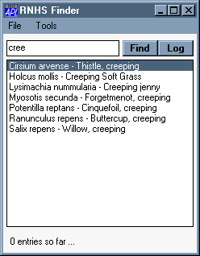
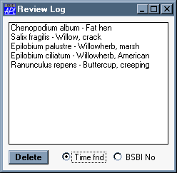

Review: First Experiences with PocketAPL
Vector 19:2, page 52
This article uses the APL2741 font for the APL code. You can download it from the Resources page
First Encounter (Madrid 2002)¶
This must have been the best-kept secret at APL2002. There had been rumours of a “Project-X” in the Basingstoke labs for several months, but none of us guessed the shape and size of the egg that the Ducks had been lovingly incubating. When the chick was finally allowed to hatch, it generated just the “Wow!” reaction that Dyadic must have been hoping for.
Just as Eric Iverson had shown J to a fascinated BAA Meeting a couple of years ago, John Daintree was able to demo a fully-fledged pocket application that exploited the array-power of APL, and was moreover a useful thing to have in your jacket pocket. His “Mornington Crescent” solver used a publicly available topology of the London Underground to allow users to tap-select on their current location and intended destination, and to get simple directions, and a rough time-estimate. All programmed in DFns (and very nicely described by John Scholes at the May Vendor Forum) with a simple but fully-functional Gui.
They even had an early version of Rain running, complete with as much of the viewer as fitted on the post-card-sized screen! In fact almost any reasonable Dyalog application should at least have a go, straight out of the box, as long as it keeps away from Windows API calls and is sensible with the Gui.
So, Adrian looked at Jonathan and Jonathan looked at Adrian and we said “Want one!”, so after a little research we have a matched pair of HP Jornada 568 clamshells, called CEcil and CElia respectively. Now comes the hard part ...
Can We Make Them Do Something Useful?¶
Oddly enough, I already had a target application in mind, which did help to get the authorisation past the APL385 purchasing department. Every few months the Ryedale Field Naturalists (see www.ryenats.org.uk) go out in search of birds or flowers or fungi. Having spent an exciting day peering into dense thickets or sinking into bogs, they return triumphant with a long list of the botany and assorted avifauna they have sighted. In former times, the list consisted of scribbled notes on a clipboard, which some muggins then had to reformat into a neat CSV file so it could be published on the website for all to admire.
Typically, the list will be over 100 flowers in a day’s outing, so you can guess that transforming the hurried notes into an accurate list with both Common and Latin names is a tedious and error-prone business. As it happens, GraPL is a handy tool for reading in a CSV and writing out a nice HTML table, so all we need is something we can take out in the field which will speed up the process of creating the CSV in the first place.
Of course, one could simply use CEcil and either Excel or Notepad to enter the data by hand, but I have accompanied enough of these trips to know that the quickfire “Look, here’s a banded Knotweed with asymmetric follicles ... it must be Albinensis rusticana” (sorry I made that one up) would swamp any attempt to work on a normal keyboard, let alone a tap-and-shoot interface. The key to success would surely be to ensure the absolute minimum of typing, and yet guarantee total accuracy in the spelling of the final result. Spurred on by the memory of POET (Portable Order Entry Terminal – Rowntrees circa 1980) and the 4K of Marconi Assembler that my colleague Dr Wilson once wrote, I set to work on the design.
A vital resource which we already had was the BSBI official list of all the plants known to grow in the UK, listed by “BSBI number”, Latin name and Common name. Of course there were far too many of these to contemplate the idea of a drop-down list (around 6,000 I think) and anyway, how would you arrange the drop-down. Sometimes it is a Latin name that is shouted across the field, sometimes the common name, sometime a mixture of both (“Ranunculus, Creeping I think ...”). The first rule of Extreme Programming is “Build the simplest thing that could possibly work” which in this case was going to be an edit field where you could enter something like “ra cre” and tap “Find” to get a list of all the likely candidates. Maybe there would only be one, or maybe several. Then the intrepid botanist could simply tap the correct one and hit “Add to cart” to log it. It had to work simply and quickly, but of course it did need to run some obvious checks, such as making sure you only logged each plant once.
So, here we are with our Dyalog 10 engine, our BSBI list and some vague ideas about design. It’s Saturday and the Terrington trip is on Tuesday. Time to stop brooding and start cutting code.
Some Early Thoughts on the Gui¶
As I’m sure you know, a Causeway is a safe path across a bog, so a good start would be a port of just enough of CPro (let’s call it CProCE) to get me going. Having spent a few days just playing, I had come to the view that the ‘typical’ Pocket application used only the most basic Gui controls. No trees, no listviews, no fancy buttonbars. Remarkably Win31 in fact, so let’s start with the classes marked ‘Win31’ in standard Causeway and see how far we get. A quick reading of the help file showed a few critical changes that would have to be made to the ‘Form’ class so it would behave correctly (for example modal forms would need to close and return 1 when the user hit the OK in the corner) and of course the default sizes for edit fields and buttons were all a little different. However this is mostly in data (the Design variable in the class namespace) so getting it all up and running took only a couple of hours.
Rather than porting the CPro Designer, I simply set the form size to match the Pocket display, and set the default font to MS Sans Serif Bold so when the form was created on the ‘real’ PC it was a close match for the actual appearance on the Pocket machine. That way, all I needed was a global switch to check the Dyalog version and enable the special behaviours which only the Pocket APL supported.
Now I could design and test the entire application in relative comfort, and simply )save it to a subfolder that ActiveSynch was looking out for. Wait a couple of seconds until the logo on the system tray want from amber to green, reload the workspace on CEcil and try it for real. Swear at an un-noticed ⎕NA call, fix or remove it, resave, count to 10, reload and try again. It sounds messy, but actually it works fine – a bit like having a dual monitor layout apart from the short delay while the WS is copied down the USB link.
Teething troubles¶
All these got fixed really quickly, but I should probably mention them in passing. There was a very strange effect caused by a line in the CPro engine which ran ⎕DR¨ on a column of a nested matrix (by the time Dyadic had fixed the bug I had removed the offending code); native files did not work at all (so I had to save the plant-list in a component file and write it to CSV with ‘real’ Dyalog-9); the main form did not minimise properly when its X button was hit, so CEcil was a one-application machine for the day. Sometimes the “context menu” event seemed to go missing, but I only made minimal use of tap-and-hold menus, so not a big problem.
The good news is that the CPro namespace is now completely common to the PC and CE platforms. All we need to do is plug in a different (and much smaller) class library. The Designer also needed no changes at all, as long as you only develop on the PC. To make a fully usable version of this for the Pocket display would be a lot of work, but I may well make a minimal version which at least allows me to debug forms and fix the “Data to watch” and “Behaviour” entries over on the Pocket. I doubt if I will ever do the visual design stuff “over there” as I cannot really see the need. Other opinions welcome, of course.
Building and Installing the Finished Application¶
As you might guess, the main form only took a few minutes to rough out, and looks like this:

I now needed to put some code behind the ‘Find’ button, and speed was likely to be an issue, so I pre-processed as much as I could to make the text search as fast as possible. The first thing I do is save the full namelist in uppercase to a cr-delimited simple vector with blanks added to the front and back of each line. I have a matching numeric vector to tell me which row each line comes from, so all I need to do is use the absurdly fast ⍷ to match each part-word the user typed and progressively eliminate candidate indices. Here is the crucial code:
ids←Find plants;plant;txt;hits;ptn ⍝ Check the full list of names ∆nm for hits on the passed⍝ Each word is taken in turn so 'but cree' would hit 'Creeping Buttercup' ⍝ Returns the ids from ∆idx of all the candidates ⍝ See Init which makes the searchable text plants←#.util.toupper plants ((plants∊'-')/plants)←' ' plants←plants~'''' plants←' ',¨' ,;'#.util.∆csvton plants :If 0∊⍴plants ids←⍬ :Return :End ⍝ Mask hits from each word ids←∆id :For plant :In plants hits←(plant⍷∆txt)/∆ptn ids∩←∆id[hits] :End
On the HP Jornada (ARM chip) this runs comfortably quick enough (under 1/10th of a second) on the 27571-byte text vector, so no problems keeping up with my handwriting speed!
Of course users make mistakes, and botanists were likely to ask “How many have we got so far?” so the other screen I needed was to allow deletion from the log, as well as to show a simple count of the number of entries so far. One of the things you cannot avoid on the Pocket Gui is a menubar, so let’s use it here! “Tools” seems a good place to bury this one, so we have something like:

Simple enough, and this one is modal so it really goes away when you hit the X in the corner. A few fragments of utility code (like Save and Revert) and we are ready to give it a tryout.
(The radio buttons choose the ordering – a very late-running field upgrade!)
Implementation issues¶
Nothing to do with Dyadic, but something to be aware of. It is amazingly hard to do the basic maintenance tasks with the CE interface. Yes, it is Windows, but it does its damndest to pretend that it is just another dumb organiser! There really is no way to edit the properties of a shortcut, let alone add a new one, with the supplied interface. As for changing stuff in the Registry, don’t even think about it!
Fortunately, there seem to be loads of useful tools out there to fill the gaps, and most of them are free. A quick trawl on the internet turned up GSFinder as a ’proper’ Explorer (actually rather a good one) and pocket RegEdit and Notepad soon followed. Now it is possible to make a new shortcut to start Dyalog, load my workspace and in the usual way have ⎕LX run up the main form. Of course we do not yet have a ‘runtime’ environment, but I can check to see if I am running on the Pocket version of APL when the form closes and ⎕OFF if so. If I add the shortcut to the Start menu (one of only 9 allowed) then we have something that has all the look and feel of a real shippable application.
As you can see, it really did work. Next time we are going to fix up some Velcro so CEcil is actually stuck to the clipboard, but in general the ergonomics were very satisfactory. I was tending to use the ‘hunt and tap’ keyboard, where Gill was definitely happier with the letter-recogniser. However both were accepted with no problems by the standard text-input field so it was easy to choose. One major benefit of the HP screen was that it was comfortably readable out of doors in full sunlight.
This, coupled with the remarkable battery life (I took it to Italy for a 5-day trip, used it as my alarm clock every morning, and was still writing code on the train home) makes it a very handy tool for use out in the field, or even the jungle!
Can we Develop APL Code with it?¶
The only way to answer this question was to give it a try. I really can’t see myself writing any serious Gui applications in this environment, but what about those little nuggets of code you need to put behind the Gui? The sort of thing that you worry away at while waiting for planes and trains, in fact. On the way back from Milan I thought it would be good to cut some real code, and hopefully make a good set of test examples to prove it.
The problem I had was simple enough to specify: given a simple numeric matrix, take an index vector (typically 2 numbers) which could be integer or floating-point and return a scalar value. Integer indices do what you would expect, floating-point values result in a simple linear interpolation on the corresponding axis. We do not attempt to extrapolate over the ends.
Simple enough, but a few cases to test and enough code to write to give the APL keyboard a reasonable work-out. How easy was it to get this working?
Using the session¶
Obviously you need this to generate your test data, select some functions to edit, and then to run. I soon found I was setting ⎕PW to be fairly wide, as otherwise even quite small matrices scrolled the session much too far for comfort. Using the rocker-pad to scroll up is fine for 2 or 3 lines, but not for much more than this. I wonder about using the old VSPC style session here – separate area for input at the foot of the screen and a special command to ‘bring down’ output lines into it.
I also found working with multiple windows very cumbersome, and quickly gave up attempts to fix code ‘on the fly’ in the editor. It seemed much less confusing just to look at a few variables, hit → and start again from the top. It never tried the tracer at all, but then again I never use it anyway, prefering the old ∘ approach to stopping code in its tracks. I think Dyadic should take a hard look at the APL2000 Code-walker which would be a far more appropriate style of interface in the limited screen-space they have available here.
Working in the editor¶
Actually typing in the APL code was the least of the problems. The auto-complete is excellent, as it can guess from the context which names are visible and usually homes in almost instantly. It almost makes the idea of putting the control-structures on one of the sets of virtual keytops redundant, as they auto-complete very quickly from the normal Alpha keypad. Of course typing the symbols is no harder than typing anything else, although I continue to wonder about the logic of perpetuating an association of symbols with keytops on a machine which does not actually have any keytops! Something more like the Word Equation-editor toolbar might have been more appropriate here? Edit, Format is a godsend here, as lining up code by hand is not something you would want to do.
Lessons for Mainstream Interpreters¶
Two things are simple and obvious.
- The auto-complete is really useful when you are digging around in a tree of namespaces. The fact that it can restrict the search to the likely valid names means that it offers useful guesses with a minimum of typing.
- We really must start offering novice APLers some keyboard help. Never mind showing a map of the keyboard – please can we just have an optional toolbar with the symbols on it, sensibly grouped. If APL2C can do it, why can’t the rest of you? I suspect even experienced APLers would find it helpful from time to time. I still type ,[1] rather than {commabar} in APL+Win because it is faster and a lot less error-prone than finding the symbol!
I think the final lesson is a bit harder to implement. I agree with Ray that we can actually generate useful applications for this little gem of a machine, and that at the moment the market is wide open. However I really think that we want a much lighter-weight installation, and that Dyalog may finally have to follow +Win and APLX in making the ‘runtime’ interpreter just that, rather than simply the development system with a flag set! Remember that this beast has no hard-drive, so any install is taking a fair chunk out of the 40Mb of installed memory. Hopefully, this message will get through to the developers, and we can also benefit from a lighter-weight installation for the ‘real’ PC platform as a result. If we can all share the same interpreter, so much the better.
Summary¶
This is a computer, and an APL implementation, that you should take seriously. It can do real work, and it really can go out in the field and do useful stuff under ‘battle’ conditions. As a machine to take with you on that 10-hour flight, it is hard to beat.
If you want to see the list of 100+ plants go to the Terrington page on the Ryenats site.
[Ed: see also Ray Cannon’s Review of PocketAPL]